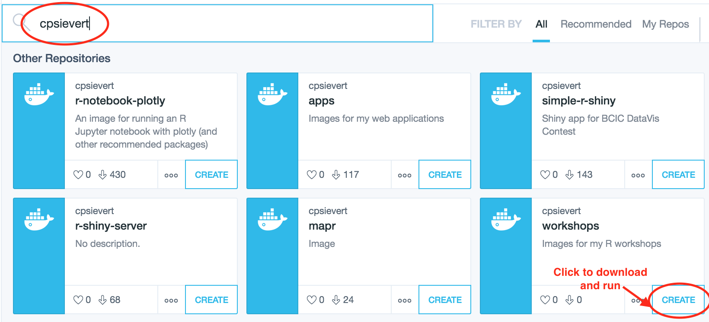
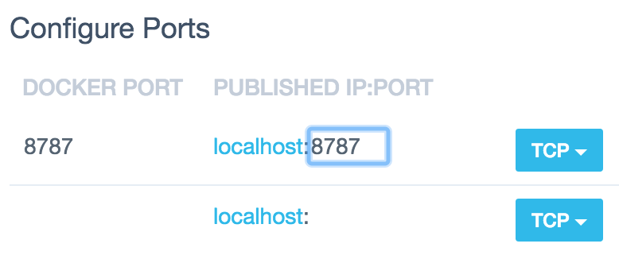
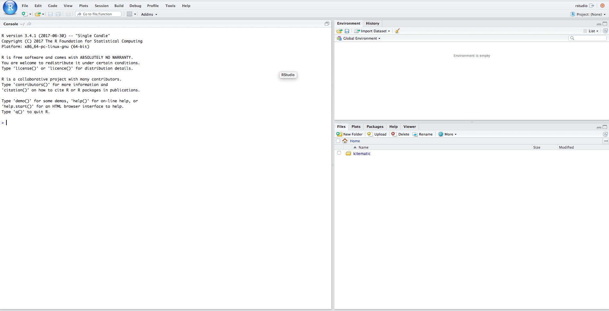

Installation
Docker
NOTE: if you already have Docker and are comfortable running terminal commands, you can skip most of these directions and run: docker run -p 8787:8787 cpsievert/workshops:20171118
Docker provides the most seamless installation experience and guarantees consistency in computational results (which is why I highly recommend this installation approach). If you don’t already have Docker, or have never heard of it, don’t worry! I’ll walk you through how to use it for our purposes. First off, download and install the Docker toolbox (completely free to use!). The toolbox ships with a number of things, one of them being a graphical interface called Kitematic which makes it easy to find/download/use Docker images. After installing the Docker toolbox, you should be able to find Kitematic in your applications. Go ahead and open it. You should see a welcome page like this:

There is no need to create a Docker Hub account (so go ahead and press ‘skip’ or ‘close’), but we’ll be downloading an image I’ve provided specifically for this workshop from Docker Hub. To download it, just type ‘cpsievert’ in the search bar and ‘create’ the relevant image:

This will download the image, which may take a few minutes (we’re downloading an entire virtual machine!). Once the image is done downloading, you should see something similar to this:
 You might need to map docker port 8787 to port 8787 on the host (click gear icon, then go to “Configure Ports†section of the “Hostname/Ports†tab)

Finally, point your web browser to http://locahost:8787, and you’ll see a log-in page for RStudio. Enter ‘rstudio’ for both the username and password. Once you see an RStudio window like this one, high-five yourself; you’re all set up for the workshop! 🉠🉠ğŸ‰
 Use ‘rstudio’ for both login and password.
Use ‘rstudio’ for both login and password.

Manual Installation
If, for some reason, the docker approach doesn’t fit your needs, you can try installing the software dependencies by hand. A bit of warning, this approach is almost guaranteed to cause more headaches than the docker approach. That being said, first off, make sure you are set up with prerequisites for building R packages. At that point, you can try installing all the R packages necessary for this workshop by doing:
# first, make sure your packages are up-to-date, then install R packages for this workshop
update.packages(ask=FALSE)
devtools::install_github('cpsievert/workshops/20171118')